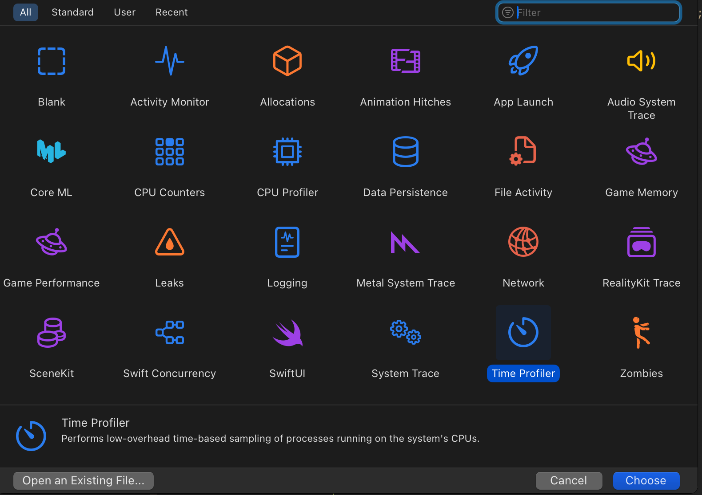
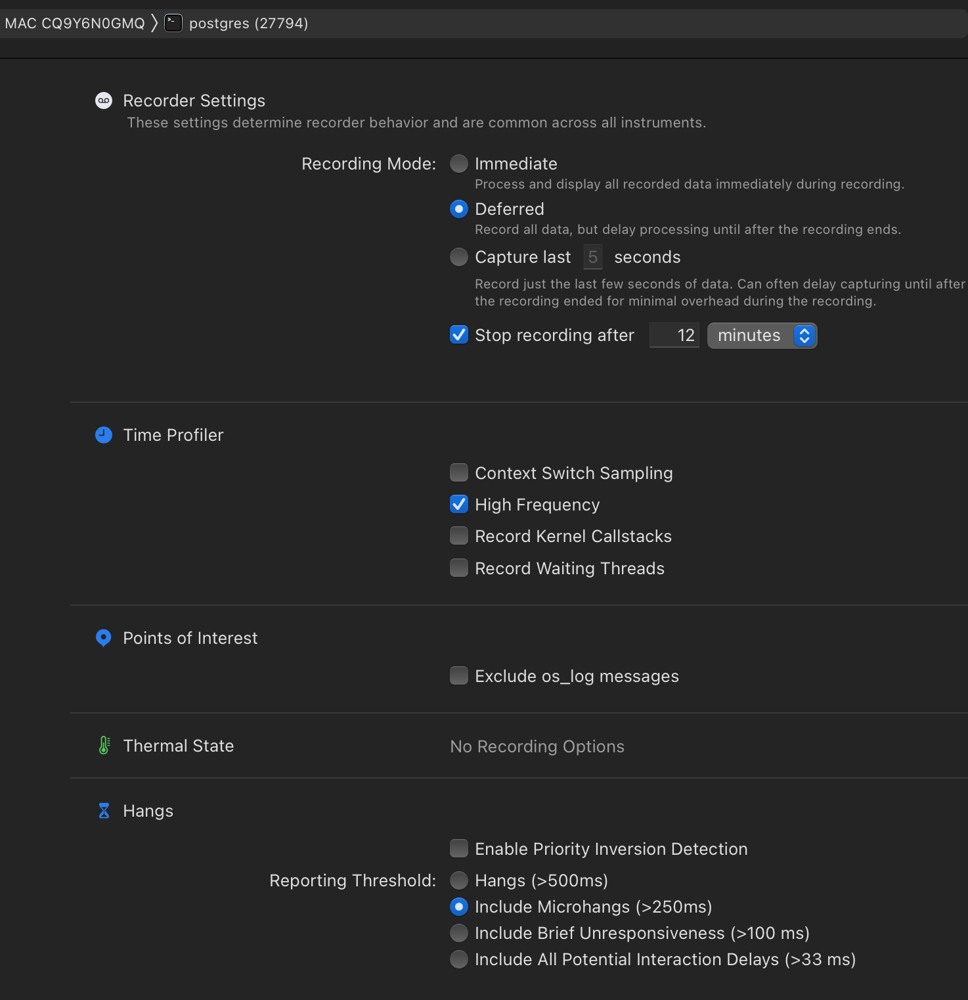
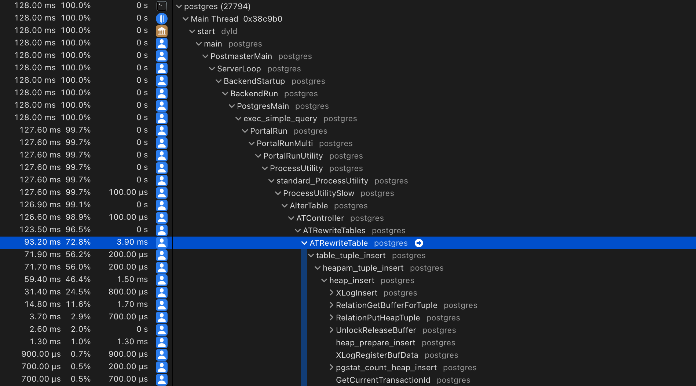
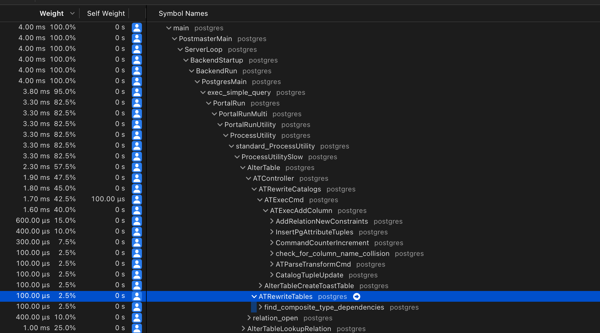

Created at: 2025-02-17
In this post I want to start from the end. I want to look into the SQL for a particular schema change, and then verify whether a Django migration that produces this change is safe to run in production or not.
Let's start with a question: Is the following schema change safe to run in a production database?
ALTER TABLE foo ADD COLUMN bar int NOT NULL DEFAULT 1234;
In this hypothetical scenario, foo is:
Without answering the question yet, I want you to consider this other statement:
ALTER TABLE foo ADD COLUMN buzz int NOT NULL DEFAULT (random() * 10000)::int;
So, have you figured if either (or both) of those are safe to run?
If not, you might want to start thinking about what Postgres would have to do
in order to have a NOT NULL column with a DEFAULT value.
Would it need to scan the table and store those values in existing rows? What if the new rows didn't fit in the page? Is there a way to do it so that Postgres doesn't need to scan the table?
One of the worst things that can happen when you perform a schema change is for it to end up rewriting the table. Rewriting takes time, and while the table is being rewritten, the DDL statement will be holding an access exclusive lock, not permitting any other sessions and transactions to read or write to the table.
So starting with the first statement, let's investigate whether it rewrites the
table or not. We will first need to get the foo table up, and populate it.
-- Create the table
DROP TABLE IF EXISTS foo;
CREATE TABLE foo (id SERIAL PRIMARY KEY);
-- Insert 100_000 rows.
INSERT INTO foo (id) SELECT generate_series(1, 100000);
Next, we want to know what Postgres is doing internally. For that, we'll need
to profile what happens when the ALTER TABLE command is running.
Note: As I am writing this post on a Mac, I will use "Instruments" to profile
Postgres, but if you are on a Linux machine you can use perf instead. I wrote
a guide
here
for the Linux users.
The first step is to grab the process id of the psql shell we are going to
use for profiling:
SELECT pg_backend_pid();
Then, open the "Time Profiler" tool on Instruments.

And find the Postgres process. In terms of configuration I mostly use the defaults. I only change the frequency to "High", and recording mode to "Deferred":

Now we hit RECORD, and perform these statements on psql:
BEGIN;
ALTER TABLE foo ADD COLUMN buzz int NOT NULL DEFAULT (random() * 1000)::int;
And then we hit STOP. The profiler result would look something like this:

There is a suspicious call to ATRewriteTable... This is not good!
Let's see what the other alter table with a constant default does. But first, let's rollback that transaction.
ROLLBACK;
And now let's run our Time Profiler and then execute the command:
BEGIN;
ALTER TABLE foo ADD COLUMN bar int NOT NULL DEFAULT 12345;

Wait a minute... Is this calling ATRewriteTables?
Yes! But this is a false positive... Calling this function doesn't mean that it
is actually rewritting the table. Perhaps a better name for that function
should be ATMaybeRewriteTables? ...
In any case, if ATRewriteTables is going to actually do anything, it will
call the ATRewriteTable (note the singular) function, where the magic
happens.
But also, scrolling down that function I see the pattern:
if (newrel || needscan)
{
if (newrel)
ereport(DEBUG1,
(errmsg_internal("rewriting table \"%s\"",
RelationGetRelationName(oldrel))));
else
ereport(DEBUG1,
(errmsg_internal("verifying table \"%s\"",
RelationGetRelationName(oldrel))));
So this means that Postgres writes to the logger when it's rewriting or verifying a table. This configuration can be turned on by:
SET client_min_messages=debug1;
So if we run the SQL statements again, we'll see that log message showing up in
the psql shell:
BEGIN;
ALTER TABLE foo ADD COLUMN buzz int NOT NULL DEFAULT (random() * 10000)::int;
-- DEBUG: rewriting table "foo"
-- This one doesn't print anything, as the table is not rewritten.
ALTER TABLE foo ADD COLUMN bar int NOT NULL DEFAULT 12345;
ROLLBACK;
Say we have the following "dumb" model:
class Foo(models.Model):
pass
Let's add a new integer field with a default:
class Foo(models.Model):
bar = models.IntegerField(null=False, default=10)
Django will create the following migration automatically:
# Generated by Django 5.1.6 on 2025-02-17 05:54
from django.db import migrations, models
class Migration(migrations.Migration):
dependencies = [
('app', '0001_initial'),
]
operations = [
migrations.AddField(
model_name='foo',
name='bar',
field=models.IntegerField(default=10),
),
]
Which results in these SQL statements:
BEGIN;
--
-- Add field bar to foo
--
ALTER TABLE "myfoo" ADD COLUMN "bar" integer DEFAULT 10 NOT NULL;
ALTER TABLE "myfoo" ALTER COLUMN "bar" DROP DEFAULT;
COMMIT;
Why is Django creating a default and dropping it immediately? This happens due to the consequences of three considerations:
default to be a callable:def my_default():
import random
return random.randint(0, 42)
class Foo(models.Model):
bar = models.IntegerField(null=False, default=my_default)
my_default as the
value to generate the DDL statement. If you run sqlmigrate multiple
times, it will even generate different outputs!-- ./manage.py sqlmigrate app 0004
BEGIN;
ALTER TABLE "foo" ADD COLUMN "bar" integer DEFAULT 15 NOT NULL;
ALTER TABLE "foo" ALTER COLUMN "bar" DROP DEFAULT;
COMMIT;
-- ./manage.py sqlmigrate app 0004
BEGIN;
--
-- Add field bar to foo
--
ALTER TABLE "foo" ADD COLUMN "bar" integer DEFAULT 4 NOT NULL;
ALTER TABLE "foo" ALTER COLUMN "bar" DROP DEFAULT;
COMMIT;
DEFAULT then? That's because adding a NOT
NULL without a default in an existing table is an error in Postgres:ALTER TABLE foo ADD COLUMN buzz_buzz int NOT NULL;
-- ERROR: column "buzz_buzz" of relation "foo" contains null values
We can see these limitations as a consequence of Django's design to allow the
default argument to work with callables.
If your database can be used by people from outside the Django application, the defaults won't be honoured. From a data-integrity perspective, it is best to enforce rules on the database than on the application.
Luckily, Django 5.0 now includes the parameter Field.db_default that allows
the default to be enforced on the database level!
So you can have this change:
class Foo(models.Model):
bar = models.IntegerField(null=False, db_default=10)
Which creates these changes:
BEGIN;
--
-- Add field bar to foo
--
ALTER TABLE "myfoo" ADD COLUMN "bar" integer DEFAULT 10 NOT NULL;
COMMIT;
Note how the DEFAULT is not dropped in this case.